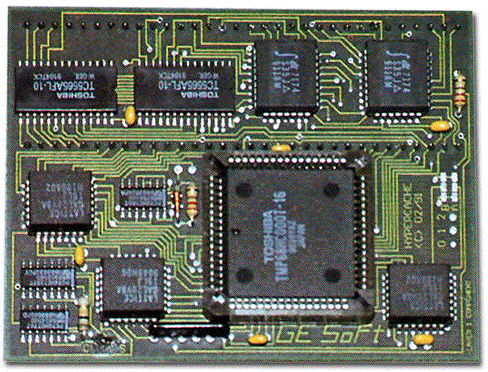
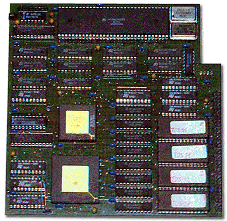

|
|
10.11 Hypercache
Atari Hyperache Beschleuniger
Die "HyperCACH Turbo plus" Karte stammt aus dem Hause
GE-Soft.
Der Beschleuniger arbeitete mit einer MC68000 CPU welche mit 16
MHz getaktet wurde. Der CPU zur Seite stand ein 32 kB großer
Cachespeicher. Die Platine wurde in platzsparender SMD Bauweise
entwickelt, wodurch sie auch problemlos in 520/1040 ST Rechnern
eingesetzt werden konnte.
Die "HyperCACH Turbo plus" Karte stammt aus dem Hause
GE-Soft. Der Beschleuniger arbeitete mit einer MC68000 CPU welche mit
16 MHz getaktet wurde. Der CPU zur Seite stand ein 32 kB großer
Cachespeicher. Die Platine wurde in platzsparender SMD Bauweise
entwickelt, wodurch sie auch problemlos in 520/1040 ST Rechnern
eingesetzt werden konnte.
Die Karte war für den Betrieb mit TOS 2.06 vorbereitet. Der
Cache und die Taktfrequenz (8/16 MHz) konnten getrennt voneinander
geschaltet werden. So war es möglich, den Prozessor mit 16 MHz,
aber ohne Cache zu betreiben, was sehr nützlich sein konnte, wenn
ein Programm mit dem Cachspeicher nicht klar kommt.
Eine Version der HyperCache Turbo+ für den 520/1040 STE gab
es auch. Der Beschleuniger kostete Anfang 1992 ca. 298,- DM
 Abbildung 1 - Hypercache Beschleuniger
Die Karte war für den Betrieb mit TOS 2.06 vorbereitet. Der
Cache und die Taktfrequenz (8/16 MHz) konnten getrennt voneinander
geschaltet werden. So war es möglich, den Prozessor mit 16 MHz,
aber ohne Cache zu betreiben, was sehr nützlich sein konnte, wenn
ein Programm mit dem Cachspeicher nicht klar kommt. Eine Version der
HyperCache Turbo+ für den 520/1040 STE gab es auch. Der
Beschleuniger kostete Anfang 1992 ca. 298,- DM
 Abbildung 1 - Hypercache 030 Beschleuniger
Der "HyperCACHE-030" Beschleuniger der Firma Wacker
Systemelektronik war komplett in TTL Technik aufgebaut und fiel
dadurch sehr groß aus. So groß, das es unmöglich war,
dieses Board in einen normalen 520/1040 ST einzubauen. Die Zielgruppe
waren also User mit einem Mega ST oder Towerumbauten.
Als CPU verrichtete ein MC68030 Prozessor mit 25 MHz bzw. 32 MHz
seinen Dienst auf dem Board, unterstützt von einer MC68882 FPU.
Ein, von einem bekannten Atari Mitarbeiter für den Betrieb mit
dem 68030 Prozessor modifiziertes TOS 1.04 wurde als Betriebssystem
eingesetzt. Für Programme, die ihren Dienst im Turbomodus
verweigerten, konnte man komplett auf die, onboard vorhandene, MC68000
CPU mit 8 MHz zurückschalten. Für einen störungsfreien
Betrieb mußte der Blitter Chip im umgebauten Rechner
ausgeschaltet oder ganz ausgebaut werden. Die HyperCACH-030 Karte
kostete Anfang 1992 ca. 1498,- DM (25 MHz Version) bzw. 1798,- DM (32
MHz Version)
Artikel von Bernd Maedicke
|
|
|